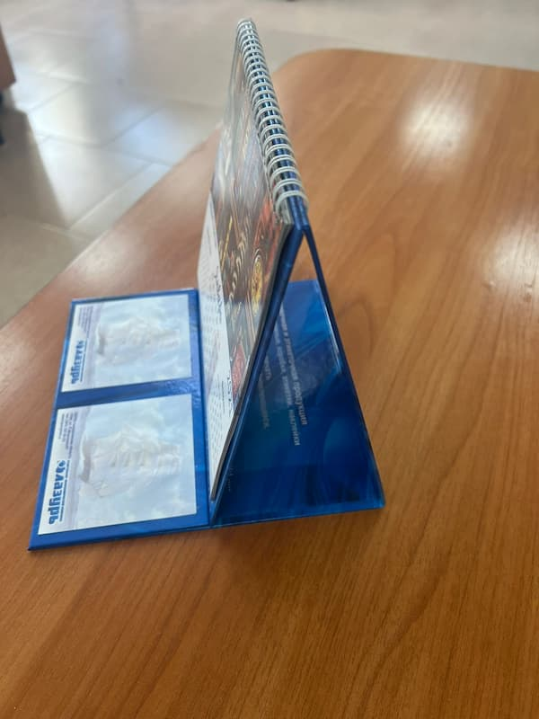
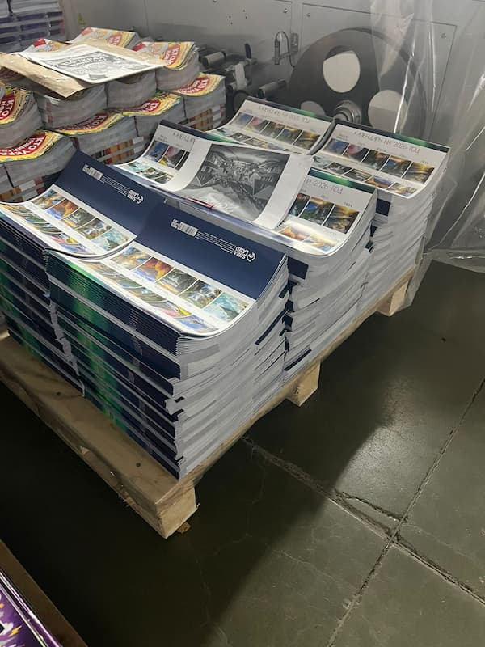
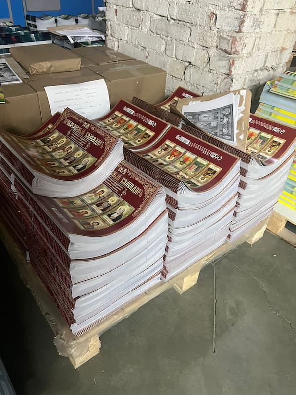
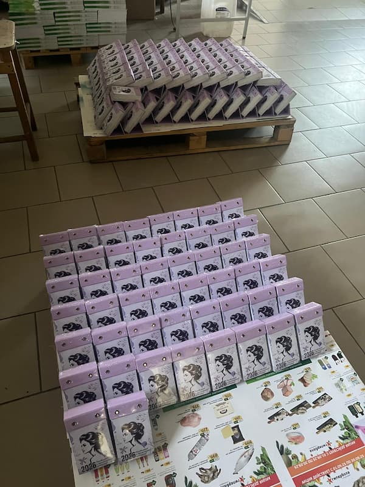

Готовимся к 2026 году заблаговременно! Современная полиграфическая компания «Лазурь» — один из лидеров рынка Свердловской области — уже активно принимает заказы на изготовление календарей на следующий год. Не упустите возможность создать уникальный календарь, который станет вашим надёжным помощником в планировании важных событий.

Безупречное качество печати обеспечивается современным оборудованием и многолетним опытом работы. Наши высокотехнологичные 8-красочные офсетные машины позволяют печатать лицевые и оборотные стороны за один проход, гарантируя превосходный результат для каждого заказа.

Широкий ассортимент календарей:
При заказе календарей в текущем месяце действует особая цена. Успейте забронировать производство вашего календаря по привлекательным условиям!


Не откладывайте на потом то, что можно заказать уже сегодня. Свяжитесь с менеджерами типографии «Лазурь», чтобы обсудить детали вашего будущего календаря. Наши специалисты помогут вам создать именно тот календарь, который будет радовать вас весь 2026 год!
Создайте свой идеальный календарь вместе с типографией «Лазурь»!